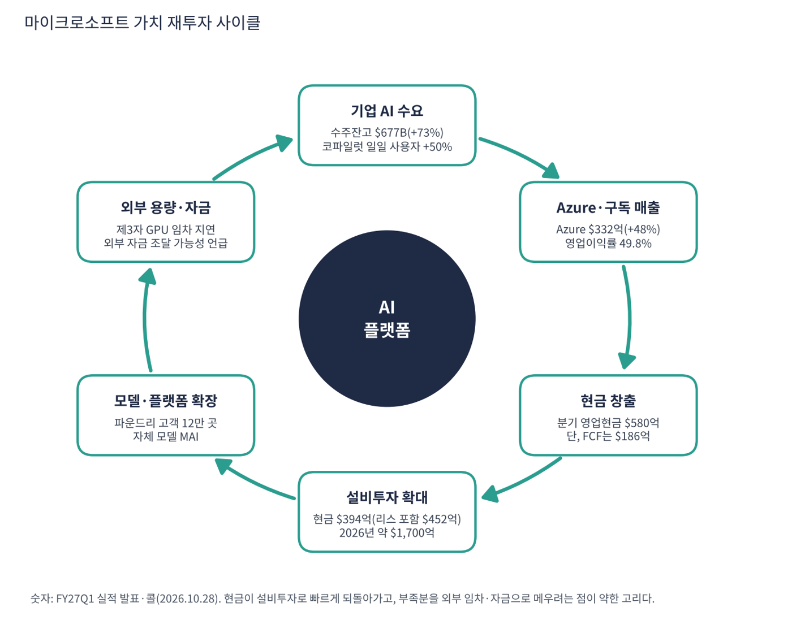

마이크로소프트는 윈도우·오피스로 PC 시대를 지배한 소프트웨어 회사에서, 클라우드(Azure)·구독형 업무 소프트웨어(마이크로소프트 365)·AI(코파일럿, 파운드리)를 파는 회사로 바뀌었다. 기업 고객 기반이 압도적으로 넓다는 것이 가장 큰 자산이다.
| 항목 | 내용 |
|---|---|
| 종목 | Microsoft Corporation (MSFT) · NASDAQ · 패키지 소프트웨어 · 1975년 설립 · 본사 워싱턴주 레드먼드 |
| 시가총액 | 약 $3.94조 · TTM PER 27.7배 · 희석 주식 약 74.5억 주 (트레이딩뷰, 11/6 종가 $530.61) |
| 최근 분기(FY27Q1) | 매출 $92.3B(+19%), 영업이익 $45.9B(49.8%), 순이익 $36.6B, EPS $4.92(+32%) |
| 다음 분기 가이던스 | FY27Q2 매출 $96.0~97.1B(+18~19%), Azure +49~50%, 설비투자 $50B 이상 |
| 주주환원 | 분기 $10.2B (배당 $6.8B + 자사주 매입 $4.4B) |
| 다음 실적 | FY27Q2: 2027년 1월 하순 발표 예정 (회계연도는 6월 종료) |
| 직책 | 인물 | 역할·특징 |
|---|---|---|
| 회장 겸 CEO | 사티아 나델라 | 2014년 취임. 윈도우 중심 회사를 클라우드·AI 플랫폼 회사로 바꿈. 사업 모델을 좌석당 구독에서 사용량 과금까지 넓힌다고 설명 |
| CFO | 에이미 후드 | 설비투자·FCF·가이던스를 설명. FY27 내내 FCF 플러스 유지, 필요하면 외부 자금원 활용을 언급 |
경영 스타일: '모든 모델이 도는 중립 플랫폼 + 지은 것을 얼마나 잘 쓰느냐'. 나델라는 데이터센터를 한 고객에 묶지 않고 컴퓨팅·데이터·파운드리·코파일럿 중 가장 가치 높은 곳에 실시간 배분하는 "대체 가능한(fungible) 함대"를 강조한다. 새 GB300 서버 가동 시간을 한 분기 만에 약 20% 줄였고, 놀던 CPU 용량을 매출로 바꿨다. 오픈AI에만 걸지 않고 자체 모델(MAI)도 키운다.
코파일럿을 '일의 새 운영체제'로 합쳐 오피스 전체를 그 안에 넣었다. 파운드리는 오픈AI·오픈소스·자체 모델을 모두 제공하고 고객 12만 곳 이상, 매출은 1년 새 3배 이상이다. 깃허브에서 에이전트가 만든 코드 변경 요청이 6개월 새 6배로 늘었다.
사람은 코파일럿으로, 개발자는 깃허브로, 회사의 데이터와 에이전트는 Azure·파운드리 위에서 돌아가게 하고 어떤 모델이 이기든 그 위에서 돈을 번다. 2026년 9월 사업부를 '에이전트·인프라'와 '기기·소비자' 두 개로 재편했다.
| 분기 (종료월) | 매출 | YoY | 영업이익 | 이익률 | 순이익 | EPS | 영업현금 | 설비(현금) | FCF | Azure | 특이 사항 |
|---|---|---|---|---|---|---|---|---|---|---|---|
| FY25Q2 (24.12) | $69.6B | +12% | $31.7B | 45.5% | $24.1B | $3.23 | $22.3B | $15.8B | $6.5B | +31% | 연말 법인세 납부로 FCF $6.5B |
| FY25Q3 (25.3) | $70.1B | +13% | $32.0B | 45.6% | $25.8B | $3.46 | $37.0B | $16.7B | $20.3B | +33% | |
| FY25Q4 (25.6) | $76.4B | +18% | $34.3B | 44.9% | $27.2B | $3.65 | $42.6B | $17.1B | $25.5B | +39% | 매출 +18%로 한 단계 점프 |
| FY26Q1 (25.9) | $77.7B | +18% | $38.0B | 48.9% | $27.7B | $3.72 | $45.1B | $19.4B | $25.7B | +40% | 오픈AI 관련 손실 $3.1B |
| FY26Q2 (25.12) | $81.3B | +17% | $38.3B | 47.1% | $38.5B | $5.16 | $35.8B | $29.9B | $5.9B | +39% | RPO $625B로 급증·오픈AI 이익 |
| FY26Q3 (26.3) | $82.9B | +18% | $38.4B | 46.3% | $31.8B | $4.27 | $46.7B | $30.9B | $15.8B | +40% | |
| FY26Q4 (26.6) | $90.0B | +18% | $40.6B | 45.1% | $35.8B | $4.81 | $55.4B | $35.8B | $19.6B | +43% | 구조조정·Xbox 손상 |
| FY27Q1 (26.9) | $92.3B | +19% | $45.9B | 49.7% | $36.6B | $4.92 | $58.0B | $39.4B | $18.6B | +48% | 사업부 재편, Azure +48% |


흐름 요약: 8분기 동안 매출 +33%($69.6B → $92.3B), 영업이익 +45%($31.7B → $45.9B). 이익이 매출보다 빨리 늘었고 영업이익률은 45%대에서 49.8%로 올랐다. Azure 성장률은 31%에서 48%로 가속했다. 순이익에는 오픈AI 지분 손익이 섞여 있다(FY26Q1 -$3.1B, FY26Q2 이익). 본업은 영업이익으로 보는 것이 정확하다. 현금 설비투자는 $15.8B → $39.4B로 2.5배가 됐지만 영업현금이 이를 넘어 FCF는 플러스를 유지한다. 금융리스를 포함한 설비투자는 FY27Q1 $45.2B이고 약 3/4이 CPU·GPU 같은 단기 자산이다.
| 매출원 | 돈을 버는 방식 | FY27Q1 매출 | 성장 |
|---|---|---|---|
| Azure | 기업·AI 연구소가 쓰는 서버·GPU·데이터베이스·AI 모델(파운드리) 사용료. 종량제 중심 | $33.2B | +48% |
| M365 클라우드 | 오피스·팀즈·보안(E3·E5·E7)을 직원 1인당 월 구독료로 판매 | $27.8B | +17% |
| 생산성·서버 라이선스 | 설치형 오피스·윈도우 서버·SQL 서버. 클라우드 전환으로 감소 | $8.4B | -3% |
| 검색·광고 | 빙 검색 광고(트래픽 획득 비용 제외 시 +12%) | $6.6B | +10% |
| Xbox | 게임 콘텐츠·게임패스·콘솔 | $5.4B | -2% |
| 인더스트리 솔루션 | 다이내믹스 365(ERP·CRM), 링크드인 | $5.3B | +9% |
| 윈도우 OEM·기기 | PC 제조사에 파는 윈도우 라이선스, 서피스. 윈도우10 종료 특수의 역기저 | $3.6B | -22% |
| 프런티어·지원 서비스 | 컨설팅·기술 지원 | $2.1B | +4% |

1년 전 Azure($22.4B)는 M365 클라우드($23.7B)보다 작았지만 지금은 $5B 이상 크다. '1인당 구독료를 받는 소프트웨어 회사'에서 '사용한 만큼 받는 인프라 회사'로 무게중심이 이동하고 있다. 사업부별로는 에이전트·인프라가 매출 $76.8B(83%, 이익률 52.8%), 기기·소비자가 $15.5B(17%, 이익률 34.6%)다. 상업용 수주잔고(RPO)는 $677B(+73%)이고 약 30%가 12개월 안에 매출이 된다. 소수 대형 AI 고객(오픈AI 등)의 장기 계약 비중이 커서 집중 위험이 있다.
공식 미션은 "지구상의 모든 사람과 모든 조직이 더 많은 것을 이루도록 힘을 주는 것"이다. FY27Q1 콜에서 나델라는 이를 AI 시대에 맞게 풀었다. 실제 행동에서 읽히는 방향은 세 가지다.
| 방향 | 구체적 행동 |
|---|---|
| ① 코파일럿 = 일의 새 운영체제 | 채팅·코워크·오토파일럿·코드를 하나로 합쳐 오피스 전체를 그 안에 넣음. 일일 사용자 전 분기 대비 약 50% 증가, 5만 좌석 이상 고객은 1년 새 8배 |
| ② 모든 모델이 도는 중립 플랫폼 | 파운드리에서 오픈AI·오픈소스·자체 모델(MAI) 제공. 자체 모델 사전학습 효율 4~12배 개선을 주장 |
| ③ 대체 가능한 인프라 | 용량을 가장 가치 높은 곳에 실시간 배분. 설비투자 1달러당 매출과 수익률을 높이겠다는 목표 |


위: 트레이딩뷰 주봉 데이터로 재구성(10·20·40주선). 아래: 트레이딩뷰 공개 차트 일봉 캡처(작도 숨김, 이동평균선·볼린저밴드만 표시).
| 이동평균 | 값 | 종가 대비 | 해석 |
|---|---|---|---|
| 5일선 | $530.10 | +0.1% | 11/4 급등 후 되돌림 중 |
| 20일선 | $531.40 | -0.1% | 주가가 20일선 위에 걸쳐 있음, 단기 방향 결정 구간 |
| 50일선 | $516.60 | +2.7% | 1차 지지. 8월 이후 종가로 깨지지 않음 |
| 100일선 | $472.30 | +12.3% | 8월 갭 구간($465~476)과 겹침 |
| 200일선 | $439.80 | +20.6% | 6월 저점($349) 이후 상승 전환 |
배열은 주가 ≈ 20일 > 50일 > 100일 > 200일의 완전 정배열이다. 2026년 1~6월 하락($490 → $349) 이후 7월 말 실적 갭 상승($382 → $465)으로 추세가 뒤집혔다.
| 규칙 | 기준 | 현재 값 | 신호 |
|---|---|---|---|
| 장기 추세 필터 | 종가 vs 200일선 | $530.61 > $439.80 | 매수 |
| 중장기 교차 | 50일선 vs 200일선 | $516.60 > $439.80 | 매수 |
| 단기 교차 | 20일선 vs 50일선 | $531.40 > $516.60 | 매수 |
| 돈키언 채널 | 55일 고가 $559.10 / 저가 $482.00 | 중간값 $520.55 위 | 매수 |
| 1개월 모멘텀 | 21거래일 수익률 | +1.5% (기준 $522.80) | 매수 |
| 3개월 모멘텀 | 63거래일 수익률 | +4.9% (기준 $505.80) | 매수 |
| 6개월 모멘텀 | 126거래일 수익률 | +27.8% (기준 $415.20) | 매수 |
| 12개월 모멘텀 | 252거래일 수익률 | +4.6% (기준 $507.30) | 매수 |
| 종합 (8개 평균) | +1.00 | 강한 매수 |
해석: 8개 신호가 모두 매수로 이번 보고서 종목 중 추세가 가장 건강하다. 다만 1·3·12개월 모멘텀 기준 가격이 모두 $506~523에 몰려 있어 이 구간을 종가로 내주면 세 신호가 동시에 매도로 바뀐다. 14일 ATR $14.50 (2.7%).
| 가격 | 무엇이 바뀌나 | 의미 |
|---|---|---|
| $560 종가 돌파 | 1년 반 저항 돌파 | 저항 소멸, 박스 폭 기준 목표 약 $613 |
| $506 ~ 523 | 1·3·12개월 모멘텀 기준 가격 | 종가 이탈 시 신호 3개 동시 매도 |
| $505 | 20일 최저가·11/2 저점 | 단기 추세 이탈 확인선 |
| $465 ~ 476 | 100일선 + 8월 갭 | 중기 추세의 마지막 지지 |
| 구분 | 가격대 | 근거 |
|---|---|---|
| 저항 | $554 ~ 559 | 2025년 7월 $555, 10월 $554, 2026년 11월 $559 — 세 번 막힌 천장 |
| 지지 1 | $516 ~ 521 | 50일선, 10/22 저점 $516 |
| 지지 2 | $505 | 11/2 저점, 20일 최저가 |
| 지지 3 | $465 ~ 476 | 100일선, 8월 갭 |
상승 추세 안의 '천장 테스트' 구간이다. 신고가 직전 추격 대신 50일선 눌림을 기다리거나 $560 종가 돌파를 확인하고 들어가는 방식이 손익비가 좋다. $516~521에서 계획 비중의 50%, $560 종가 돌파 후 나머지 50%를 진입한다(평균 $518·손절 $499 기준 손익비 1:2.2~1:4.3). 1차 $559에서 40%, 2차 $600~613에서 40% 익절하고 나머지는 20일선 이탈 전까지 추세를 따른다. $505 종가 이탈 시 비중을 줄이고 $499에서 손절한다.
| 악재 요인 | 내용 | 강도 |
|---|---|---|
| 대형 AI 고객 집중 | RPO $677B 중 오픈AI 등 소수 계약 비중이 큼. 예약(bookings) -12%(전년 대형 계약 기저) | 중간~높음 |
| 설비투자·자금 조달 | 분기 $50B+, 2026년 약 $170B. 회사가 처음으로 외부 자금원 활용을 언급 | 중간~높음 |
| 마진 압박 | 클라우드 매출총이익률 약 65%로 하락 예고, 메모리·스토리지 가격 상승이 설비 원가를 키움 | 중간 |
| 제3자 GPU 지연 | 외부 용량 지연으로 일부 GPU 서비스 계약이 하반기로 이연 | 중간 |
| 소비자 부문 약세 | 윈도우 OEM -22%(다음 분기 -30%대 중반), Xbox 감소 | 참고 |
| M365 실행 부진 | E3·단품 판매가 약했음, 좌석 성장 둔화를 코파일럿 단가가 메워야 함 | 참고 |
| 티커 | 회사 | 시가총액 | PER(TTM) | PEG | P/S | EPS 성장(YoY) |
|---|---|---|---|---|---|---|
| MSFT | 마이크로소프트 | $3,940B | 27.7배 | 0.74 | 11.09배 | +36% |
| GOOGL | 알파벳 | $3,476B | 14.9배 | 0.17 | 7.39배 | +89% |
| AMZN | 아마존 | $2,804B | 21.0배 | 0.27 | 3.45배 | +75% |
| META | 메타 | $1,560B | 20.8배 | 0.67 | 6.18배 | +30% |
| ORCL | 오라클 | $351B | 18.2배 | 0.37 | 4.70배 | +48% |
| AAPL | 애플 | $4,975B | 38.2배 | 1.84 | 10.21배 | +20% |
EPS 성장률은 트레이딩뷰 TTM 값이다. 알파벳·아마존·메타는 투자 이익이 순이익에 섞여 있다.
비교 결론: 마이크로소프트 PER 27.7배는 알파벳(14.9배)·아마존(21.0배)·메타(20.8배)·오라클(18.2배)보다 높고 애플(38.2배)보다 낮다. PEG 0.74는 알파벳(0.17)·아마존(0.27)보다 비싸다. 빅테크 중 가장 '비싼 대신 가장 건강한' 축이다. 프리미엄은 FCF 플러스와 완전 정배열 추세가 정당화하지만, 영업 기준 PEG 1.46이 보여주듯 이익 성장이 가격을 받쳐 주는 정도는 동종보다 작다.
마이크로소프트는 적자 기업이 아니다. 영업현금 $58.0B(분기)로 설비투자를 감당하고 FCF도 플러스다. 그래서 '런웨이' 대신 설비투자가 현금을 얼마나 먹는지를 점검했다.
| 지표 | 값 | 계산·출처 | 해석 |
|---|---|---|---|
| 최근 4분기 FCF | +$59.9B | FY26Q2~FY27Q1 합계. 트레이딩뷰 $60B와 일치 | 알파벳·아마존과 달리 FCF 플러스 유지 |
| 영업현금 대비 설비투자 | 약 68% | FY27Q1 현금 설비 $39.4B ÷ 영업현금 $58.0B | FY25Q2 71%, 사이 분기 49~65% |
| 현금·단기투자 / 총 부채(리스 포함) | $64.5B / $133.9B | 트레이딩뷰 | 순부채 약 $69B, 순부채/EBITDA 0.34배 |
| 다음 분기 설비투자 | $50B 이상 | 회사 가이던스(리스 포함). 2026년 약 $170B | 분기 설비가 영업현금 수준에 근접 |
| 분기 주주환원 | $10.2B | 배당 $6.8B + 자사주 $4.4B | FCF의 약 55% |
| 가정 | 분기 FCF | 계산 | 의미 |
|---|---|---|---|
| 설비 $50B(현금 기준), 영업현금 $58B 유지 | 약 +$8B | $58B - $50B | 주주환원 $10.2B을 FCF가 못 채움 |
| 설비 $50B, 영업현금 10% 감소 | 약 +$2B | $52B - $50B | FCF가 거의 0, 환원은 현금 보유분 사용 |
두 가정은 내가 둔 스트레스 점검이다(회사 설비 가이던스는 리스 포함 $50B 이상이라 현금 기준은 이보다 낮을 수 있음). 회사가 제시한 FCF 전망이 아니다.
| 기준 | 매출 | P/S | 비고 |
|---|---|---|---|
| 트레이딩뷰 표시값(11/6 환산) | – | 11.1배 | 산출 기준 차이 |
| 최근 4분기(TTM, SEC) | $3,465억 | 11.4배 | 시총 $3.94조 ÷ $3,465억 |
| FY27Q2 가이던스 연율화 | $3,860억 | 10.2배 | 중간값 $96.5B × 4 (가정) |
| 빅테크 동종 | – | – | 알파벳 7.4, 애플 10.2, 메타 6.2, 아마존 3.4, 오라클 4.7 |
해석: 11.4배는 비교 빅테크 중 애플과 함께 높은 쪽이다. 영업이익률이 50%에 가까워 매출 1달러의 이익이 크다는 점이 이를 정당화하지만, 성장률이 19%라 엔비디아·AMD보다 높은 P/S를 성장이 받쳐 주지는 않는다.
| 지표 | 값 | 판정 |
|---|---|---|
| EBITDA (트레이딩뷰, TTM) | $2,053억 | 흑자 |
| 영업이익 (TTM) | $1,632억 | FY26Q2~FY27Q1 합계 |
| 영업이익 → EBITDA 차이 | 약 $421억 | 감가상각·상각비(추정). 설비투자 증가로 계속 커지는 항목 |
| EBITDA 마진 | 59% | $2,053억 ÷ $3,465억 |
| 순부채 / EBITDA | 약 0.34배 | 총 부채에 리스 포함, 재무 부담 낮음 |
감가상각이 영업이익과 EBITDA의 차이로 보이는 것이 중요하다. 수천억 달러 데이터센터가 가동되며 이 차이가 커진다. 영업이익률이 지켜지는 동안은 문제가 안 되지만, 회사도 클라우드 매출총이익률이 다음 분기 약 65%로 낮아질 것이라고 밝혔다.
| 방식 | PER | EPS 성장률 | PEG | 판정 |
|---|---|---|---|---|
| 트레이딩뷰 (TTM, 11/6 환산) | 27.7배 | +36.2% | 0.74 | 투자 적격 |
| 직접 계산 (SEC 분기 EPS 합계) | 27.7배 ($530.61 ÷ $19.16) | +36% ($14.06 → $19.16) | 0.76 | 투자 적격 |
| 영업이익 기준 (오픈AI 손익 제외, 추정) | 약 29.2배 ($530.61 ÷ 약 $18.18) | 약 +20% (영업이익 TTM $1,360억 → $1,632억) | 약 1.46 | 기준 초과 |
| 낙관 (영업이익 +25% 성장 가정) | 약 29.2배 | +25% | 1.17 | 기준 초과 |
판정: 순이익 기준 PEG 0.74는 '투자 적격'(1.0 이하)이지만 '적극 매수'(0.5 이하)에는 못 미친다. 더 중요한 점은 오픈AI 지분 손익이 섞인 순이익 대신 영업이익으로 계산하면 PEG가 약 1.46으로 1.0을 넘는다는 것이다(주당 영업이익 약 $18.18은 세율 17% 가정의 내 추정치). 36%라는 EPS 성장률은 영업 성장(약 20%)이 아니라 기저 효과와 투자 이익이 만든 부분이 크다. 따라서 이 PEG는 같은 방식의 엔비디아(0.20)·알파벳(0.17)보다 훨씬 비싸게 읽어야 한다.

마이크로소프트 사이클의 엔진은 기존 고객 기반 위에서 늘어나는 AI 수요다. 그 매출·현금이 설비투자로 빠르게 되돌아가 용량을 늘리고, 늘어난 용량이 Azure 성장을 받친다. 다른 빅테크와 달리 투자 수익이 '기존 고객의 단가 인상'이라는 확실한 경로로 들어온다.
| 고리 | 현재 숫자 | 고리 강도 | 약해지는 신호 |
|---|---|---|---|
| ① 기업 AI 수요 | RPO $677B(+73%), 12개월 이후분 +98%, 코파일럿 일일 사용자 +50% | 강함 | 예약(bookings)이 -12%로 감소, 대형 계약 의존 |
| ② Azure·구독 매출 | Azure $33.2B(+48%), 영업이익률 49.8% | 강함 | 클라우드 매출총이익률 약 65%로 하락 예고 |
| ③ 현금 창출 | 분기 영업현금 $58.0B, 최근 4분기 FCF $59.9B | 강함 | 설비투자가 영업현금의 70% 이상으로 상승 |
| ④ 설비투자 | 현금 $39.4B(리스 포함 $45.2B), 다음 분기 $50B+, 2026년 약 $170B | 확대 | 메모리·스토리지 가격 상승이 원가를 키움 |
| ⑤ 모델·플랫폼 | 파운드리 고객 12만 곳, 자체 모델 MAI | 진행 중 | 오픈AI 의존 축소 속도, 모델 경쟁 |
| ⑥ 외부 용량·자금 | 제3자 GPU 임차 지연, 외부 자금 조달 가능성 첫 언급 | 주의 | 임차 계약 이연, 회사채 발행 규모 |
구조: 이 사이클은 알파벳·아마존보다 건강하다(FCF 플러스). 강한 고리는 ①~③이고 약한 고리는 ④·⑥이다. 앞으로는 설비투자가 영업현금을 넘어서는 시점과 외부 자금 조달 여부가 사이클의 지속 가능성을 가른다.